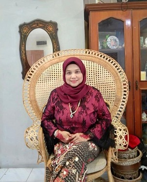

History of Zurina's Cookies
Zurina's Cookies Sdn. Bhd. is a cookies shop that sell a variety of cookies that have their own speciality. The founder for this cookies shop is Mrs Zurina Hashim, 49 years old. This cookies shop starts in 2016, which Mrs Zurina Hashim starts the business in a small amount of capital until she be a successful businesswoman now. The cookies that have be produces is a handmade recipe from her late mother, which is expert in cookies producing. The cookies shop is locating in Nibong Tebal, Penang.
In this business, there are two (2) types of cookies that have been produces, which the traditional and modern cookies. The traditional cookies are Bakar Kacang, Bangkit Puteh, Putu Beras and Putu Kacang. This type of cookies has a high orders from customers, as the cookies is difficult to find now a days. Besides, the modern cookies are Samperit Dahlia, Tart nanas, Kacang Peas, Makmur cookies, Mazola cookies and etc., Zurina's Cookies Sdn. Bhd. also produce "Agar-Agar Kering" which also get a high orders from customers. This is because, the handmade recipe that be used can make people fall in love with all the cookies products.
The sales of cookies also according to the festivals, which the people from a different race loves to place order. For example, the Chinese people likes to place order for "Biskut Bangkit Puteh". They always buy that cookies in celebrating their festival likes "Tahun Baru Cina". There also has a sale for the Eid Festival, and etc., In other words, her cookies product also is suitable for the other race.
Mission and Vision
| VISION | MISSION |
|---|---|
| Zurina's Cookies wants to be success in Interstate and International market. | To serves the customers the wide variety of cookies that delicious and tasty. |
About Founder

First and foremost, this is Mrs Zurina Hashim, the founder of Zurina's Cookies Sdn. Bhd. She is 49 years old and have two (2) daughters. She was born in 22 March 1971 in Pantai Remis, Perak. After married, she follow her husband to lives in Skudai, Johor Bharu as her husband work there. But, now she lives in Nibong Tebal, Penang. Before this, she is a full housewife but after she realizes that she has a talent in baking, she starts do a small business, which get an orders from her friends, family and etc. They also give more support to her in growing the business. Her late mother also give a support for her with taught her how to be a good baker. Besides, her daughters also gives a good commitment in helping her to handle the business.